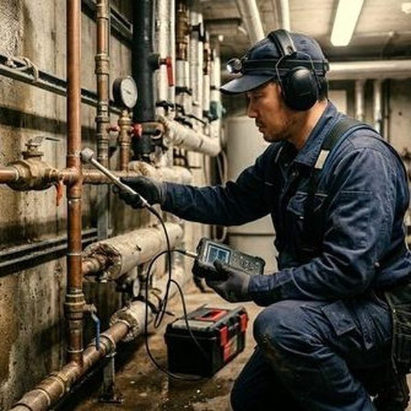
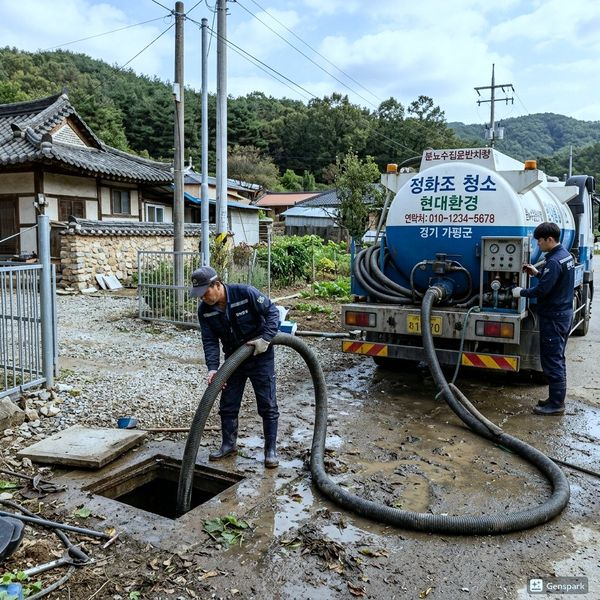
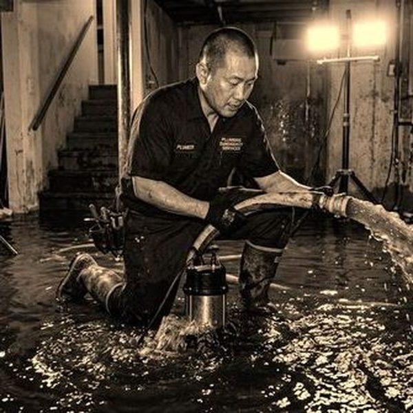

배관 동파 시 보험 보상이 가능한 경우
배관 동파로 인한 피해는 화재보험이나 주택종합보험의 수도관 동파 담보 특약에 가입되어 있다면 보상 받을 수 있습니다. 보상 범위는 동파된 배관의 수리 또는 교체 비용, 누수로 인한 실내 재산(가구, 가전, 벽지 등) 피해, 긴급 수리를 위한 출장비가 포함됩니다. 다만, 관리 부주의(장기간 부재 시 난방 미가동, 동파 예방 조치 미실시 등)로 인한 동파는 보상이 제한될 수 있습니다. 보험 가입 시 수도관 동파 특약이 포함되어 있는지 반드시 확인하세요.

동파 보험 청구 절차
동파가 발생하면 다음 순서로 진행합니다. ①즉시 수도 메인 밸브를 잠급니다. ②피해 현장 사진과 동영상을 촬영합니다. ③보험사에 사고 접수를 합니다. ④전문 수리 업체(제우스시설관리)에 긴급 수리를 요청합니다. ⑤수리 업체로부터 수리 견적서와 명세서를 발급받습니다. ⑥보험사에 견적서, 수리 명세서, 현장 사진, 진단서를 제출합니다. 제우스시설관리는 동파 현장에 28분 내 출동하며, 보험 청구에 필요한 현장 진단서와 상세 수리 명세서를 발급해 드립니다. 겨울철 동파 예방을 위한 배관 보온 서비스도 제공합니다.

자주 묻는 질문
Q. 동파 보험 특약 보험료는 얼마인가요?
A. 주택 화재보험에 수도관 동파 특약을 추가하면 연 1~3만원 수준의 추가 보험료가 발생하며, 보상한도는 보통 500만원~1000만원입니다.
Q. 세입자인 경우 동파 수리비는 누가 부담하나요?
A. 배관 자체의 동파 수리는 집주인(임대인) 부담이 원칙이며, 세입자 부주의로 인한 동파는 세입자 책임이 될 수 있습니다.